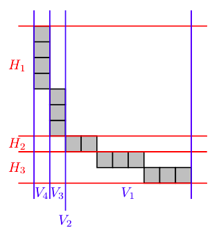

\(k\)-shape¶
Sage does not have a builtin ‘kShape’ object. This module contains useful functions pertaining to \(k\)-shapes:
AUTHORS:
- Matthew Lancellotti (2018): Initial version
REFERENCES:
| [genocchi] | (1, 2, 3, 4) Combinatorics of k-shapes and Genocchi numbers, in FPSAC 2011, Reykjav´k, Iceland DMTCS proc. AO, 2011, 493-504. |
-
k_shape.h_bounds(p, k, width)[source]¶ Recall the \(H_i\) as defined in Definition 3.3 of [genocchi].
Given a natural number
k(used for the \(k\)-shape or \(k\)-boundary) and a widthwidth, returns \((y_\text{min}, y_\text{max})\), the two vertical coordinates which define the horizontal strip.EXAMPLES:
The 4-boundary of partition (10, 7, 4, 2, 2, 2, 1, 1, 1, 1) is shown below on a cartesian plane with the vertical lines corresponding to the vertical bounds shown in blue.
sage: h_bounds(Partition([10, 7, 4, 2, 2, 2, 1, 1, 1, 1]), k=4, width=3) (0, 2) sage: h_bounds(Partition([10, 7, 4, 2, 2, 2, 1, 1, 1, 1]), k=4, width=2) (2, 3) sage: h_bounds(Partition([10, 7, 4, 2, 2, 2, 1, 1, 1, 1]), k=4, width=1) (3, 10)
sage: h_bounds(Partition([10, 7, 4, 2, 2, 2, 1, 1, 1, 1]), k=4, width=99) (0, 0) sage: h_bounds(Partition([10, 7, 4, 2, 2, 2, 1, 1, 1, 1]), k=4, width=0) Traceback (most recent call last): ... ValueError: min() arg is an empty sequence
See also
{kind=link}
-
k_shape.is_irreducible(s, k)[source]¶ A
k-shapeptnis called irreducible if there does not exist a \(k\)- or \(k-1\)-rectangle corresponding to both the \(k\)-row-shape and \(k\)-column-shape of \(ptn\).For a more rigorous definition, see Definition 3.7 of [genocchi].
Given a \(k\)-shape
ptnand a natural numberk, returnsTrueif and only ifptnis irreducible.(Also, a \(k\)-shape is irreducible if and only if it is not reducible.)
EXAMPLES:
The partition [3, 2, 1] has 3-row-shape [2, 2, 1] and 3-column-shape [2, 2, 1]. It is not 3-irreducible because there exists a 2x2-rectangle R in the 3-row-shape and the cells that make up R when viewed in the 3-column-shape form a 2x2-rectangle (you can’t see it, but the 2’s are switched here):
sage: is_irreducible(Partition([3, 2, 1]), k=3) False
In this example, no good rectangle can be found, making it irreducible:
sage: is_irreducible(Partition([5, 3, 2, 1, 1]), k=4) True
See also
-
k_shape.is_k_reducible_by_rectangle(p, k, hw)[source]¶ Checks if the
k-shape is \(k\)-reducible for a \(k\)-rectangle of specific dimensions \(h\) x \(w\).See Proposition 3.8 in Combinatorics of k-shapes and Genocchi numbers.
INPUTS:
p– a Partition (and a \(k\)-shape)k– the \(k\) of the \(k\)-shapehw– an ordered pairhw= \((h, w)\), where \(h\) is the height of the rectangle and \(w\) is the width.
EXAMPLES:
sage: Partition([1]).is_k_reducible_by_rectangle(1, (1,1)) sage: True sage: Partition([2, 1]).is_k_reducible_by_rectangle(1, (1,1)) sage: True sage: Partition([1, 1]).is_k_reducible_by_rectangle(2, (1,1)) sage: False sage: Partition([1, 1]).is_k_reducible_by_rectangle(2, (1,2)) sage: True sage: Partition([1, 1]).is_k_reducible_by_rectangle(2, (2,1)) sage: FalseSee also
-
k_shape.is_k_shape(ptn, k)[source]¶ A partition is a \(k\)-shape if its \(k\)-boundary has row-shape and col-shape that are partitions themselves. (Definition 2.1 of [genocchi])
Given a
Partitionptnand a natural numberk, returnsTrueif and only ifptnis a \(k\)-shape.Given a
Partitionptnonly, returnsTrueif and only if there exists some \(k \in [1, n-1]\) such thatptnis a \(k\)-shape.EXAMPLES:
sage: is_k_shape(Partition([3, 1]), 1) False sage: is_k_shape(Partition([3, 1]), 2) True
-
k_shape.is_reducible(ptn, k)[source]¶ A
k-shapeptnis called reducible if there exists a \(k\)- or \(k-1\)-rectangle corresponding to both the \(k\)-row-shape and \(k\)-column-shape of \(ptn\).For a more rigorous definition, see Definition 3.7 of [genocchi].
Note that this is different than the definition of a reducible partition!
Given a \(k\)-shape
ptnand a natural numberk, returnsTrueif and only ifptnis reducible.(Also, a \(k\)-shape is reducible if and only if it is not irreducible.)
EXAMPLES:
The partition [3, 2, 1] has 3-row-shape [2, 2, 1] and 3-column-shape [2, 2, 1]. It is 3-reducible because there exists a 2x2-rectangle R in the 3-row-shape and the cells that make up R when viewed in the 3-column-shape form a 2x2-rectangle (you can’t see it, but the 2’s are switched here):
sage: is_reducible(Partition([3, 2, 1]), k=3) True
In this example, no good rectangle can be found:
sage: is_reducible(Partition([5, 3, 2, 1, 1]), k=4) False
See also
-
k_shape.k_to_irreducible_k_shapes(k)[source]¶ Given a natural number
k, return a list of all irreducible \(k\)-shapes.Note that the algorithm runs very slowly after \(k=4\) :(.
EXAMPLES:
sage: k_to_irreducible_k_shapes(3) [[], [1], [2, 1]]
See also
-
k_shape.v_bounds(p, k, height)[source]¶ This is \(V_i\), the vertical analog of
h_bounds().EXAMPLES:
The 4-boundary of partition (10, 7, 4, 2, 2, 2, 1, 1, 1, 1) is shown below on a cartesian plane with the vertical lines corresponding to the vertical bounds shown in blue.
sage: v_bounds(Partition([10, 7, 4, 2, 2, 2, 1, 1, 1, 1]), k=4, width=4) (0, 1) sage: v_bounds(Partition([10, 7, 4, 2, 2, 2, 1, 1, 1, 1]), k=4, width=3) (1, 2) sage: v_bounds(Partition([10, 7, 4, 2, 2, 2, 1, 1, 1, 1]), k=4, width=2) (2, 2) sage: v_bounds(Partition([10, 7, 4, 2, 2, 2, 1, 1, 1, 1]), k=4, width=1) (2, 10)
sage: v_bounds(Partition([10, 7, 4, 2, 2, 2, 1, 1, 1, 1]), k=4, width=99) (0, 0) sage: v_bounds(Partition([10, 7, 4, 2, 2, 2, 1, 1, 1, 1]), k=4, width=0) Traceback (most recent call last): ... ValueError: min() arg is an empty sequence
See also